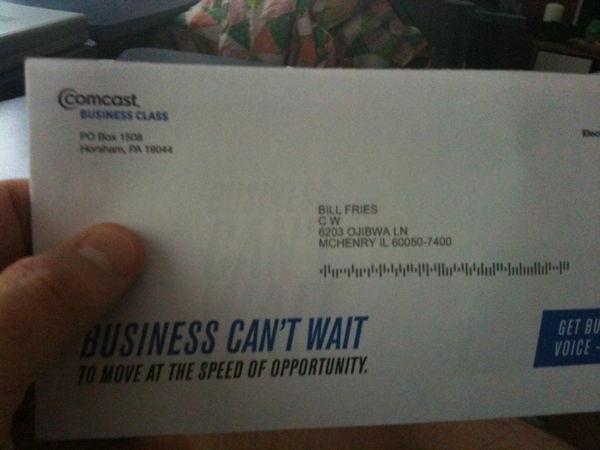
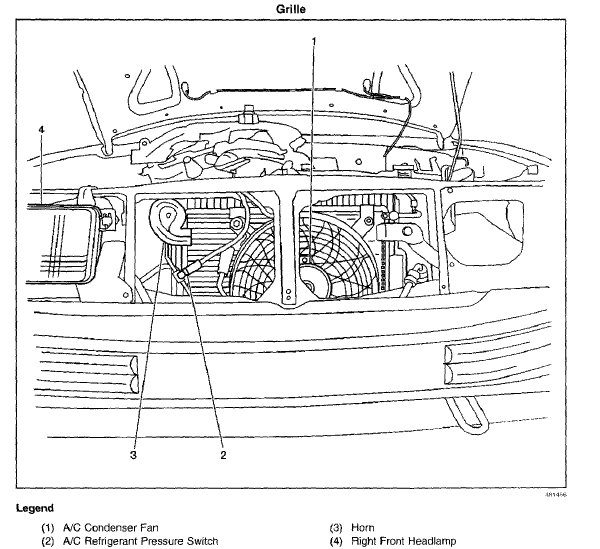
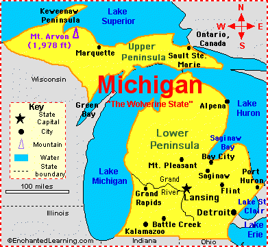

The Legend-News
What We Got Here
- Helter, Skelter, In The Summer Swelter: Too darn hot.
- C.W. Sightings: He’s everywhere! He’s everywhere! He’s …in my house?
- New Critters On The Block: they’re here, they’re there.
- Skywalker: On the Road Again (Part II): Alan Chafin continues his trip.
- Previously, in The Legend-News: The Absolutely Last, Final, and Ultimate Item That We Will Publish Regarding “That Line” in “The Gallopin’ Goose”.
- Song A’ Th’ Month: “The Gallopin’ Goose”
Helter Skelter, In The Summer Swelter
7:28 p.m., Central Daylight Time. Temperature outside: 86°F; inside: 81°F. And the air conditioning is working …overtime.
So here’s your mid-summer edition of The Legend-News, warm off the hard drive.
Special Note: Get Spotify! It’s a music streaming service, and the free version has ads but they’re not really annoying. Best of all, Spotify has all of the tracks from C.W. McCall’s Greatest Hits, The Best of C.W. McCall, and American Spirit!
C.W. Sightings
On June 16 and 17, the Colorado Railroad Museum in Golden, Colorado held its annual “Goosefest”, bringing together Geese 2, 6, and 7 for public rides. (Thanks to Critter Chris Guenther for the news.)
The Space Cadet (hey, that’s me!) received this envelope in the snail mail. Apparently, Bill Fries has moved to McHenry, Illinois; and while I have searched my house, I have failed to find him. He swears that he’s still in Ouray, Colorado – but would a big corporation be wrong?

New Critters On The Block
Paul Machett of Bracebridge, Ontario, who declares that it’s likely some of C.W. McCall’s fault that he ended up trucking for life.
Cary Levitt of Myersville, Maryland, who tells me
“Here’s the message that should be sent… Sagittarius we has arrived!”
From Live Science June 26, 2012:
The Wow! signal is the only blip of incoming data to have stood out from the noise in the four decades that astronomers have been scouring the heavens for signs of life – an effort known as the Search for Extra-Terrestrial Intelligence, or SETI. The Big Ear radio observatory at Ohio State University picked up the intense 72-second radio transmission coming from the direction of the constellation Sagittarius. At its peak, the transmission was 30 times more powerful than ambient radiation from deep space, prompting the volunteer astronomer Jerry Ehman to scrawl “Wow!” next to the data on a computer printout, giving the signal its name.
I’m getting my silver t-shirt ready.
Natasha Gardner of 5280: Denver’s Magazine, who grew up in South Dakota listening to C.W. McCall.
Bloomfield to Baghdad, the latest novel from Tom Claffey.
American Spirit and The Real McCall: An American Storyteller, a two-album bundle from American Gramaphone.
Alan Chafin is selling books from his personal library.
The latest review on The Thinking Chick’s Guide: Hatfields and McCoys (2011) (TV).
Skywalker: On the Road Again (Part II)
by Alan Chafin
May 2011
My plans to go to Alaska were coming together nicely. My associates at work thought I was nuts. (I didn’t argue.) Still, I had other friends who understood or at least accepted what I was doing without comment.
I was driving to work one day when I noticed what appeared to be a little “steam” coming out from under the hood. I glanced at my temperature gauge and it was almost red-lined. Great…
I took my car to the garage and waited for the bad news and bad it was: radiator, water pump, and a belt all needed to be replaced.

I knew and trusted these guys as they had always been reliable and honest so I had never had any reason to suspect bill padding. They said it would cost a little over $1,000. They also mentioned it was time for some scheduled maintenance and would I care to get it done at the same time. Doing so would help reduce the bill a little rather than putting it off for a second garage visit. I told them to go ahead. The final bill was just under $1,500.
That money had to come from somewhere and I had no choice but to take it from the Alaska trip fund. That was about half of the money I had set aside and with the remainder there is no way I could swing that adventure no matter how many corners I cut. ARRRGH!
I still had the vacation scheduled so I began to look at alternatives.
It appears that I inherited my predilection for travel from my parents. They had a number of travel-related goals and have met many of them. One of them was to visit all 50 of the United States. Additionally, they wanted to say they have spent the night in every one of them. When I was young I decided that was a pretty neat goal so I decided to do the same.
My parents have managed to accomplish both of those goals: visit and sleep in every state in the US. I actually managed to get to one state before they did – Kansas. (How they missed it while hitting every state surrounding it I cannot imagine.) Anyway, I’ve slept in about 35 states, have visited 48 of them, and my plan not to leave Alaska for last was failing miserably.
I chose to travel to the other state I had yet to experience: Michigan. I had been within site of that state before – twice, actually – but had never set foot within its borders. So, I decided that would be the first of my new destinations.
It actually began to sound better the more I thought about it. It was a prime vacation spot for Ernest Hemingway in his youth, Michael Palin had visited many places there in one of his travel documentaries (both of whom I admire), and it held a filming location for one of my favorite movies. Yeah, Michigan would be a good alternate destination.

I was going to drive but decided that I wanted a vehicle with better mileage than my Chevy Tracker. I did some research and found that I could get a medium sedan at a good rental price for the 9-day trip from Enterprise. However, I was going to cover a lot of miles and some rental agencies cap the number of miles you’re permitted to drive per day (redefining “unlimited” to “it means what we say it means.”) When I made the reservation I had the agent send me an e-mail confirming that unlimited miles actually meant unlimited miles.
The day of departure had arrived so I went to my nearby Enterprise location to get the car. Again, I emphasized I would be taking a long road trip and asked if there was a mileage limitation. They reconfirmed that there was no limit on my miles.
I drove home and loaded the car: 1 CB radio, 2 GPSs, a laptop, my cell phone, an mp3 player, a camera, chargers for all of the above, 2 inverters, light camping gear, a loaded cooler, a small suitcase, lots of notes on various destinations and gas prices along the route, and a few sundries. I was hoping to leave by about 10 a.m. but there were a couple of delays.
Wheels were rolling North out of Baton Rouge, Louisiana, just before noon on June 4th, 2011…
Next time: Rolling North on I-55
Previously, in The Legend-News
From the 2003 June 16 issue of The Legend-News.
The Absolutely Last, Final, and Ultimate Item That We Will Publish Regarding “That Line” in “The Gallopin’ Goose”
We capitulate. The continuing debate about whether the conductor of the Gallopin’ Goose “declared” or “acquired” a busted driveshaft has continued long enough. Mike Smith just weighed in with “acquired”, and we were finally driven to do what we should have done weeks ago: we asked Bill Fries.
The question posed: “In ‘The Gallopin’ Goose’, are the words ‘He declared a busted driveshaft’ or ‘He acquired a busted driveshaft’ or ‘He’d acquired a busted driveshaft’?”.
The One, True Answer: “The correct answer is ‘He’d acquired’”.
Bill says that it’s true, so it’s true. The Legend-News apologizes for any stupidity in its past regarding this Momentous Question, and the debate is ended. Go in peace.
Song A’ Th’ Month
Speaking of geese…
The Gallopin’ Goose
(Chip Davis, Bill Fries)
From the album
Roses For Mama
On a cold November mornin’
Back in nineteen-thirty-seven
With an early snow a-fallin’
On the three-foot tracks at Ames
Came a mighty strange contraption
Known to trainmen as a Motor
But to folks in Colorado
She was known by another name
Up the canyons south of Sawpit
Past the red Cathedral spires
’Cross the yellow mountain switchbacks
And the rapids far below
On the high and lofty trestles
Near the fabled mines of Ophir
In the silver San Juan Mountains
Came a goose a-plowin’ snow
[Chorus]
With a Pierce-Arrow engine,
Runnin’ hot and on the loose
Came the Rio Grande Southern
The Gallopin’ Goose
With a Pierce-Arrow engine
Runnin’ hot and on the loose
Came Number Five, The Gallopin’ Goose
’Twas a four-door auto-mobile
On a dozen wheels of iron
Sixteen feet of rockin’ boxcar
Spot-welded to her tail
Loaded down with mercantile
Ten bags a’ high-grade ore
Two mothers nursin’ babies
Seven miners an’ the mail
Up the side a’ Sunshine Mountain
By internal gas combustion
Eight Pierce-Arrow pistons pullin’
Fifteen thousand pounds a’ lead
At the snowshed on the summit
The conductor said his prayers
He’d acquired a busted driveshaft
On the pass at Lizard Head
[Chorus]
With a Pierce-Arrow engine
Runnin’ hot and on the loose
Came the Rio Grande Southern
The Gallopin’ Goose
With a Pierce-Arrow engine
Runnin’ hot and on the loose
Came Number Five, The Gallopin’ Goose
[Musical interlude here.]
Down the three-percent to Rico
In the valley of Dolores
They still talk about the Southern
An’ her flock of flyin’ geese
From the roundhouse at Ridgway
To the depot at Durango
All the tracks are gone for scrap iron
And the ganders rest in peace
Up the canyons south of Sawpit
Past the red Cathedral spires
’Cross the yellow mountain switchbacks
And the rapids far below
On the high and lofty trestles
Near the fabled mines of Ophir
In the silver San Juan Mountains
There’s a legend in the snow
[Chorus]
With a Pierce-Arrow engine
Runnin’ hot and on the loose
Came the Rio Grande Southern
The Gallopin’ Goose
With a Pierce-Arrow engine
Runnin’ hot and on the loose
Came Number Five, The Gallopin’ Goose
“The Gallopin’ Goose” can be found on the album The Best of C.W. McCall.
The Legend-News is published monthly by TechRen Enterprises, your pink and plastic buddy that’s fun to be with. Copyright 2012 TechRen Enterprises. Send subscription requests, unsubscribe demands, complaints, kudos, suggestions, news and other contributions to Legend-News@cw-mccall.com. Almost everything in The Legend-News has been written by Ed. Floden, except for the stuff that he blames on someone else. “In my experience, if something is too good to be true, it’s best to shoot it just in case.”